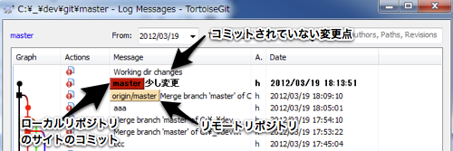

Windowsではmsysgit（git本体）とGUIツールのTortoiseGITを使います。
Downloads - msysgit - Git for Windows - Google Project Hosting
から、msysGit-fullinstall-1.7.9-preview20120201.exeをダウンロードします。
exeファイルをダブルクリックします。
展開先を「C:\msysgit」のままにして実行しました。
もし他のパスがよい場合は適宜変更してください。
InstallMSysGit · msysgit/msysgit Wiki に書いてある以下のシェルを実行します。
/share/msysGit/initialize.sh
このmsysgitの面白いところが、Unixコマンドが打てることです。
llとかpwdとかUnix上で使っていたコマンドが使えます。
サイドこのプロンプトを開きたいときは、
C:\msysgit\msysgit\msys.bat
を実行します。
なので、このファイルのショートカットを作っておくと便利かもしれません。
C:\Users\hoge\.gitconfig
ここにおいてあります。
せっかくなので、コンソールからグローバルなユーザー名とメールアドレスを設定しちゃいましょう。
msys.batを起動して、以下のコマンドを打ちます。
ユーザー名とメールアドレスは適宜読み替えてください。
git config --global user.name "hoge"
git config --global user.email "hoge@hoge.com"
では環境設定を表示してみましょう。
git var -l
user.nameとuser.emailがちゃんと反映されています。
core.symlinks=false
core.autocrlf=true
color.diff=auto
color.status=auto
color.branch=auto
color.interactive=true
pack.packsizelimit=2g
help.format=html
http.sslcainfo=/mingw/bin/curl-ca-bundle.crt
sendemail.smtpserver=/mingw/bin/msmtp.exe
diff.astextplain.textconv=astextplain
rebase.autosquash=true
http.proxy=
user.name=hoge
user.email=hoge@hoge.com
core.repositoryformatversion=0
core.filemode=false
core.bare=false
core.logallrefupdates=true
core.symlinks=false
core.ignorecase=true
core.hidedotfiles=dotGitOnly
remote.origin.fetch=+refs/heads/*:refs/remotes/origin/*
remote.origin.url=c:/_/dev/gittestrepos/test.git/
branch.master.remote=origin
branch.master.merge=refs/heads/master
GIT_COMMITTER_IDENT=hoge hoge@hoge.com 1331271139 +0900
GIT_AUTHOR_IDENT=hoge hoge@hoge.com 1331271139 +0900
GIT_EDITOR=vi
GIT_PAGER=less
Downloads - tortoisegit - Porting TortoiseSVN to TortoiseGIT - Google Project Hosting
から、TortoiseGit-1.7.7.0-64bit.msiをダウンロードします。
32bitな方は、32bitのほうをダウンロードしてください。
これを呼んだので、特に何も迷わずに次へ次へと進んでみました。
これでインストールは完了。
TortoiseGitに付属しているPuttygenから作成することもできるのですが、一般的なsshキーファイルではなくPutty用のファイルになってしまうので、あえてmsysgitからssh-keygenを行い、さらにそれをPuttygenを使って変換してTortoiseGitで使えるようにします。
こうしておけば、msysgitからの操作、TortoiseGitからの操作、の両方ができるのでローカルに構築するgit環境としてはこちらのほうがよいかと思います。
$ C:\msysgit\msysgit\msys.bat
では、gitを起動して、
$ $ ssh-keygen -t rsa
を実行します。
すると、「C:\Users\hoge」と自分のユーザーの場所に.sshフォルダが作成されます。
この中にあるid_rsaファイルがローカルで必要になる秘密鍵。
id_rsa.pubファイルがgitサーバーで必要になる公開鍵になります。
そして、各ユーザー管理サイトに「.ssh/id_rsa.pub」ファイルの中身をSSH Keyとして登録します。
次に、TortoiseGit側の設定をします。
「スタートメニュー→TortoiseGit→Puttygen」を起動します。
起動したら、Loadボタンをクリックします。
ファイル選択ダイアログのファイルタイプをすべてにしてid_rsaを選択します。
PuTTYgen Noticeというダイアログが出ますが、OKをクリックして閉じます。
Save private keyボタンをクリックします。
はいをクリックします。
適当な名前をファイル名に入れて、保存します。
これで、sshキーの設定は終わりです。
まずは、ローカルにリモートリポジトリの内容をダウンロードします。 適当なディレクトリで、「右クリック→Git Clone…」を選択します。
Url欄にはリポジトリのURLを、Directoryにはclone先（ダウンロード先）を指定します。
Okボタンを押すと、cloneが始まりローカルにリモートリポジトリのファイルたちがダウンロードされます。
ためしにファイルを追加してみましょう。
README.txtというファイルを作ってみます。
そして、何もないところで「右クリック→Git Commit -> “master”…」を選択します。
すると画面上部にMessage領域、下に変更点のあるファイルが表示されています。
適当に「初めてのコミット」と入力し、README.txtのチェックを付けて、OKボタンを押してみましょう。
これは、gitコマンドで言うところの、
$ git add README.txt
$ git commit -m '初めてのコミット'
が行われたことと同様になります。
つまり、ローカルのリポジトリに対して、コミットが完了していて、リモートリポジトリにはまだpushしていません。
git pullをすることでリモートリポジトリに反映できます（SVNで言うところのコミットですね）
何もないところで「右クリック→TortoiseGit→Push」を選択します。
TortoiseGitのダイアログが表示されます。
Remoteにorigin（cloneしたらデフォルトで作られるリモート）が選択され、Remote Branchにはmaster（cloneしたらデフォルトで作られるブランチ）が選択されています。
これはローカルのブランチmasterをリモートのリポジトリoriginに反映するという意味になります。
あとは、OKをクリックすればgit pushの完成です。
ここまでがSVNで言うところのコミットと同じことになります。
gitでは、ローカルリポジトリを主軸と考え、ここにどんどんコミットしていきます。
はじめは1コミットしたら1Pushをする感覚でよいと思います。
ローカルで素早くコミットできるので、ある程度溜まってからでも特に問題はないと思いますが、なれるまでは上記がよいでしょう。
同じファイルを別々の人が修正、git pushしようとするとコンフリクトしてしまう。
Aさん
1.htmlに「hoge」と書きこむ。
1.htmlをgit commitする。
git pushする。
Bさん
1.htmlに「foo」と書きこむ。
1.htmlをgit commitする。
git pushする。 #1
上記手順を踏むと、#1のところで、エラーがでます。
git.exe push --progress "origin" master:master
To C:\_\dev\git\repos
! [rejected] master -> master (non-fast-forward)
error: failed to push some refs to 'C:\_\dev\git\repos'
To prevent you from losing history, non-fast-forward updates were rejected
Merge the remote changes (e.g. 'git pull') before pushing again. See the
'Note about fast-forwards' section of 'git push --help' for details.
git did not exit cleanly (exit code 1)
これは、他の誰かがすでにgit pushをしているので、それをローカルリポジトリに落としてね。といっているので、git pullします。
すると、
git.exe pull -v --progress "origin"
remote: Total 3 (delta 0), reused 0 (delta 0)
From C:\
3893bde..a9387c7 master -> origin/master
Auto-merging README.txt
CONFLICT (content): Merge conflict in README.txt
Automatic merge failed; fix conflicts and then commit the result.
git did not exit cleanly (exit code 1)
こんなコンフリクトしたよーという内容のメッセージが表示される。
README.txtの中を開いてみると、
<<<<<<< HEAD
hoge
=======
foo
>>>>>>> a9387c7dc88f4db8d3872532cc08d5d262341ef2
のように、コンフリクトしている箇所が表示される。
hoge
foo
最終的に、このようにしてコミットしてあげればコンフリクトが解決したことを意味する。
実際にはgit addすれば解決したことになる。
これでgit pushすれば完了。
git addしていないファイルたちを追加・修正・削除を行った場合に、反映される。 つまり何かしら作業を開始すると自動的に作業ツリーに反映される。
git addしたファイルが反映される。
最後にgit commitしたポイント
最後にgit commitしたポイントのさらにもう1個前のポイント
最後にgit commitしたポイントのさらにもう2個前のポイント
git resetを行った場合に、git resetを取り消したい場合に使用する。 つまりHEADを移動させたときの、処理をUNDOするポイント。
gitの良いところでもありますが、ローカルリポジトリで複数回のコミットを行うことができます。
ある作業の塊単位で、git commitしておけば、それだけcommitの履歴も綺麗になります。
その場合に、複数回コミットしたが、あるファイルをgit addするのを忘れてしまっていたため、もう一度コミットをやり直したいという場合です。
そんなときにコミットをある特定のポイントに戻したい場合は、git resetを使います。
何もないところで「右クリック→TortoiseGit→Show log」を選択します。
ここでひとつ面白いパターンをご紹介します。

この画像の状態は、
という作業をした場合になります。
つまり、origin/masterとなっているところが、リモートリポジトリからgit pullしてきたポイント。 master少し変更となっているところが、ローカルでの自分が行ったコミットポイント。 Working dir changesとなっているところが、コミット後にさらに修正したワーキングツリーのポイント。
という感じになります。
これは、gitを使い始めると当たり前のように起こる状態になりますが、ここでひとつ気をつけて下さい。
origin/masterよりも前、つまりこのGUIでは下方向ですが、過去のものを選択してgit resetは行わないようにしましょう。
もしも過去の状態に戻したいならgit revertをして、その状態に戻したということを新規にコミットするようにしてください。
すでにgit pushされたものを書き換えるのは、他のメンバーと整合性がとれなくなり、同期させるのが大変です。
「時代は変えてはいけないのだよ。諸君。」
リセットのタイプの解説は以下のとおり。
—soft
HEAD の位置のみを変更する。インデックス、ワーキングツリーには影響なし。
—mixed (またはオプションなし)
HEAD の位置とインデックスを変更する。ワーキングツリーには影響なし。
—hard
HEADの位置、インデックス、ワーキングツリーをすべて変更する。
何もないところで「右クリック→TortoiseGit→Show log」を選択します。
origin/masterとなっている行で「右クリック→Reset “master” to this…→Hard」を選びます。
これで、自分のコミットをすべて無効にした状態になります。
git config --global color.ui auto
git config --global color.diff auto
git config --global color.status auto
git config --global color.branch auto
git config --global alias.co "checkout"
git config --global alias.st "status -sb"
git config --global alias.lg "log --graph --pretty=oneline --decorate --date=short --abbrev-commit --branches"
git config --global alias.b "branch"
git config --global alias.br "branch -r"
あと、今回紹介していない内容はここ読めばだいたいのことが書かれています。
©2012 - hisasann